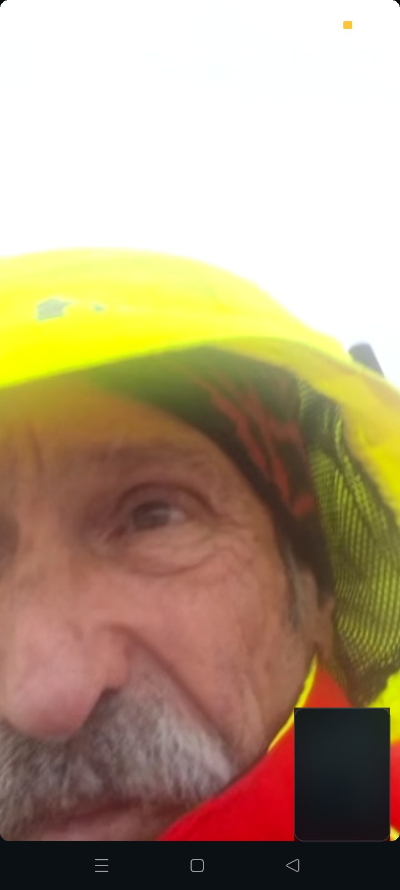
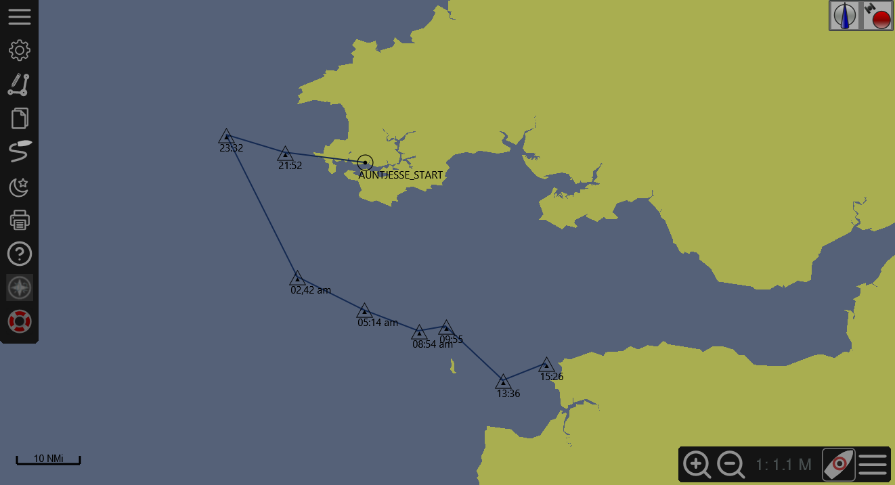
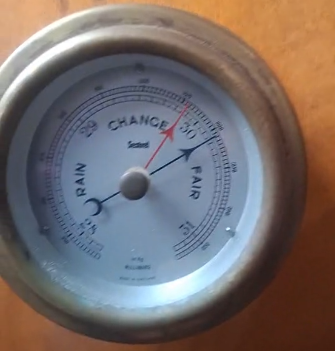
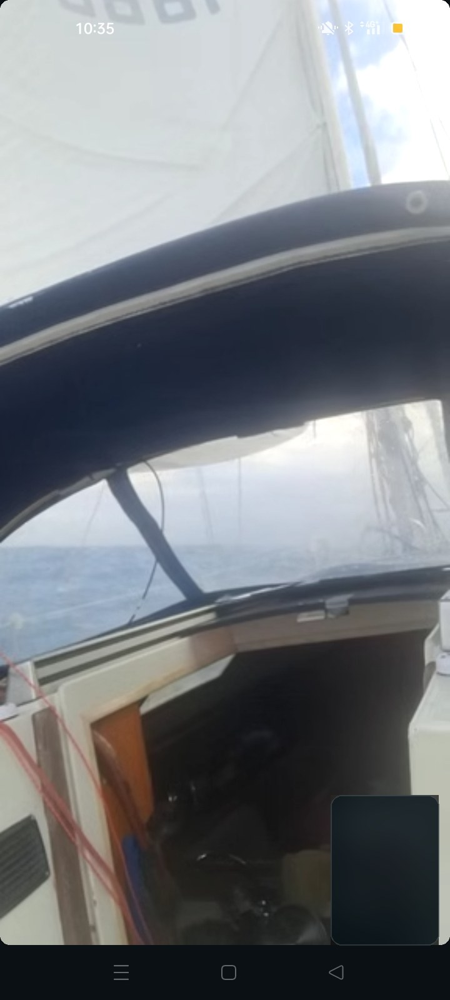
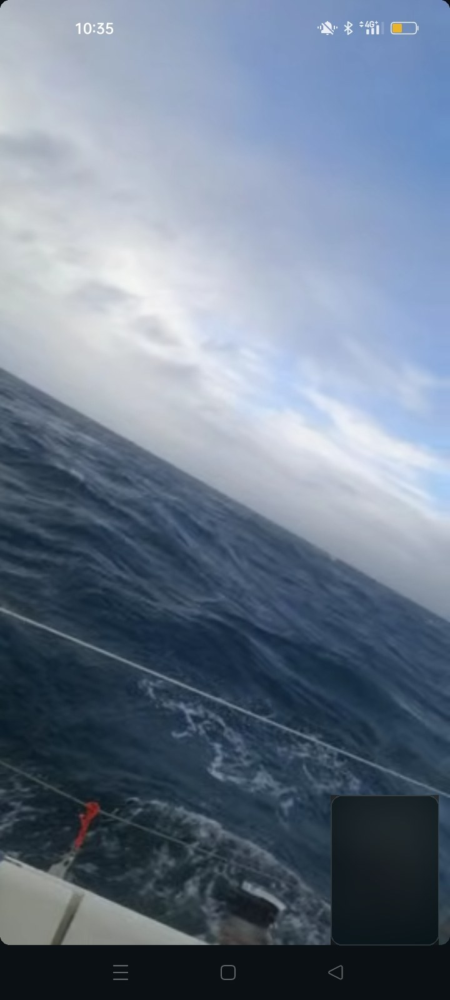
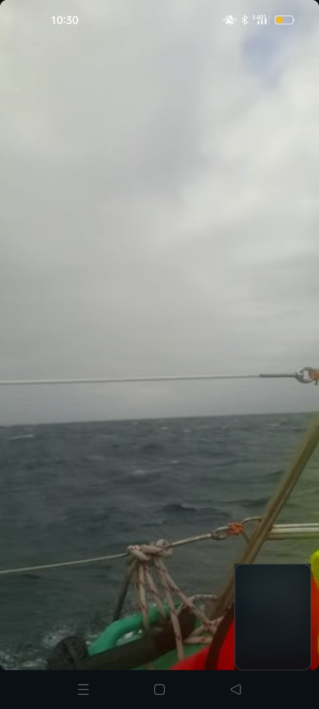
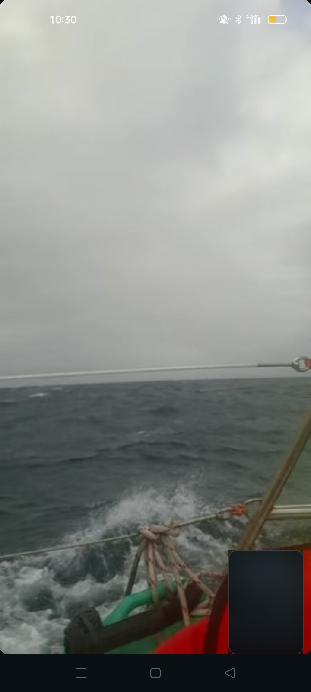

After days of rain, electrical work, provisioning and watching several weather windows, Hartmut left Milford Haven aboard Auntjesse. The larger plan pointed south toward Spain. A Coruña was the first major destination.
But the first night quickly became something else: a real shakedown of the boat, its systems, and the physical limits of solo sailing.

“Big swells… can't see a thing. No stars. Cloud cover.”
The shared position fixes show a passage that first pushes south and then bends east toward the North Devon coast. By morning the central question was no longer how to continue toward Spain, but where Auntjesse could safely stop.

The RYA specifically warns that wave height can increase significantly when tidal stream opposes the wind, with the effect stronger on larger-range tides. Around Ilfracombe, RYA cruising guidance describes tidal streams of about three knots; farther up-channel they can become much stronger.
Met Office material also notes that the estuary can funnel winds and create local convergence and heavy showers. Hartmut later reported gusts reaching approximately 35 knots during the passage.

The main weakness exposed by the first passage was electrical. According to Hartmut's account of the voyage, the onboard installation could not comfortably sustain the combined load of the navigation electronics and autopilot when everything was needed at once.
The system struggled to support the instruments and steering equipment continuously.
In the heavy sea Hartmut could no longer rely on automatic steering and took the helm manually.
Communication equipment also gave trouble, reducing confidence in continuing offshore.
Plotter problems added another reason to seek a harbour where the navigation system could be checked.
In darkness, with the boat already difficult to control, a wave ripped the liferaft free from its attachment. Hartmut managed to recover it before it was lost and pulled it into the cockpit.
One problem arrived while another still demanded attention.

The boat was being pushed off course by the waves. An electronic pilot can react to changes in heading, but it does not visually anticipate each approaching crest in the way a helmsman can. In these conditions Hartmut hand-steered, reading the sea and trying to place the boat correctly on each wave.
For a solo sailor that decision has a cost: while both hands and attention are committed to the helm, there is no second crew member to navigate, check equipment, manage communications or rest.

In difficult conditions, fatigue becomes part of the navigation problem. Every task that a crew could share falls to one person. The same sailor must steer, navigate, diagnose the electrical system, protect safety equipment, communicate and decide what comes next.


With electrical limitations, problems affecting the VHF and plotter, the need to hand-steer and a night of hard work behind him, continuing the offshore passage no longer made sense. The new objective was simpler: reach a harbour, recover, and repair the boat.
At 12:07 another position was sent. By 13:58 the contemporary calculation put Ilfracombe about 13.6 nautical miles away on a bearing near 072° true.
Hartmut had been steering around 100–110°. The exchange tried to orient him toward the harbour beyond Mortehoe and Woolacombe.
“Sorry can't see anything.”
The passage narrative combines the contemporaneous message/position log with Hartmut's later account of the equipment and liferaft events. The technical explanation of wind, tide and local weather is general context and does not reconstruct the exact wave field at Auntjesse's position.
Later on 12 September, Auntjesse reached Ilfracombe. The southbound voyage had paused — but it had also revealed exactly what had to be fixed before Hartmut could leave again.
BACK TO LOGBOOK →